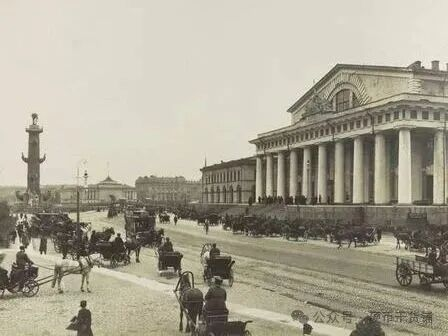
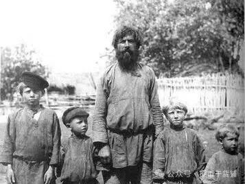
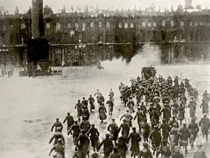

崩塌前夜：沙皇俄国，到底烂到了什么程度？
文字与图片版权归各自权利人所有。 查看公众号原文 ↗
很多人提起苏联，第一反应是 “革命”、“红色”、“列宁”。但很少有人认真想过一个最根本的问题：
为什么革命会在俄国发生？为什么偏偏是布尔什维克能成功？
答案其实很简单：不是革命者太强，而是旧制度先烂透了。没有沙俄的崩溃，就没有十月革命；没有沙俄的极端落后、极端不公、极端脆弱，就不会有后来那个横跨欧亚的红色帝国。要读懂苏联，必须先读懂它的 “前世”——沙皇俄国。
一、一个 “跛脚” 帝国：欧洲的面子，亚洲的里子
19 世纪末到 20 世纪初，俄国顶着 “欧洲列强” 的名头，版图辽阔，军队庞大，皇室气派，看起来威风凛凛。

但剥开外壳，内里早已千疮百孔。
它是最后一个废除农奴制的欧洲大国（1861 年），比英法晚了近百年；
农村依旧是中世纪式的贫困与愚昧，地主、贵族、教会掌握绝大多数土地；
工业起步晚、规模小、技术落后，几乎完全依赖外资与外国工程师；
政治上是绝对君主专制，沙皇 “君权神授”，杜马（议会）形同虚设，反对者要么流放，要么处决。
当时西方有一句很刻薄的评价：“俄国是拥有欧洲外表的亚洲国家。”它勉强挤进列强俱乐部，却始终跟不上工业化、现代化、民主化的浪潮。它既守不住旧制度，又走不通新道路，整个社会像一座堆满干柴的森林，只差一颗火星。
二、底层烈火：农民、工人、知识分子，全都在失望
沙俄的矛盾，简单说就是三层撕裂：1. 农民：土地饥饿，活不下去。农奴制废除后，农民并没有真正获得土地，反而背负沉重赎金，赋税繁重，一遇荒年就大面积饥荒、流离失所。他们对沙皇、对贵族、对整个旧秩序充满仇恨。

2. 工人：极端残酷的原始积累。俄国工厂条件恶劣、工时极长、工资极低、没有任何保障，罢工被武力镇压，工会非法。工人运动从一开始就带着强烈的革命色彩，而不是温和改良。3. 知识分子与精英：绝望与激进。自由派想要宪政、法治、改革，但沙皇寸步不让。激进派则彻底放弃改良，转向秘密组织、地下宣传、武装斗争。整个国家呈现出一种诡异的状态：上层奢靡僵化，中层绝望迷茫，底层怒火中烧。1905 年革命已经试过一次爆发 ， 流血星期日、水兵起义、全国罢工，沙皇靠武力与小恩小惠勉强稳住，但病根一点没动。所有人都知道：下一次爆发，只是时间问题。
三、压垮帝国的最后一根稻草：第一次世界大战
如果没有一战，沙俄或许还能苟延残喘几年。但战争一来，所有矛盾瞬间爆发。
俄军装备落后、指挥混乱、伤亡以百万计，前线不断溃败；
国内工厂全力转军品，民用物资奇缺，粮食、燃料、日用品全面涨价；
运输系统崩溃，前线缺弹缺粮，后方饿殍遍地；
沙皇亲自上前线指挥，把后方交给皇后与妖僧拉斯普京，宫廷丑闻传遍全国，皇室威信彻底扫地。
到 1917 年初，俄国已经是：前线在崩、经济在崩、社会在崩、信仰在崩。城市里排队买面包的队伍越来越长，怨言越来越响，士兵厌战、农民暴动、工人罢工，整个国家处于随时爆炸的边缘。当时的俄国，已经不是 “需不需要改革” 的问题，而是旧制度还能不能活过明天的问题。
四、一个关键结论：苏联不是凭空出现的
很多人把苏联看作 “外来意识形态强行嫁接” 的结果。但真实历史是：沙俄自己先埋葬了自己。它拒绝改革、拒绝妥协、拒绝现代化，用专制、贫困、战争把整个社会逼到绝境。当旧秩序彻底失效、国家机器瘫痪、人心尽失的时候，革命不是 “选择”，而是 “必然”。布尔什维克之所以能后来居上，不是因为他们一开始就拥有无限力量，而是因为：旧制度先死了，权力真空出现了。1917 年的俄国，不是被 “推翻” 的，它是自己先塌了。

而接下来，就是那段改变世界的历史：两次革命、一场内战、一个全新国家在废墟上诞生。
本期结语 & 下期预告
一个腐朽、落后、外强中干的帝国，在战争与饥饿中轰然倒塌。旧世界死去了，但新世界还远未到来。1917 年，俄国将迎来两场惊天动地的革命：二月革命推翻沙皇，十月革命改写人类历史。
下一期，我们走进 1917：
从沙皇倒台，到临时政府上台，再到列宁归来，
看一个国家如何在短短几个月内，彻底换了人间。